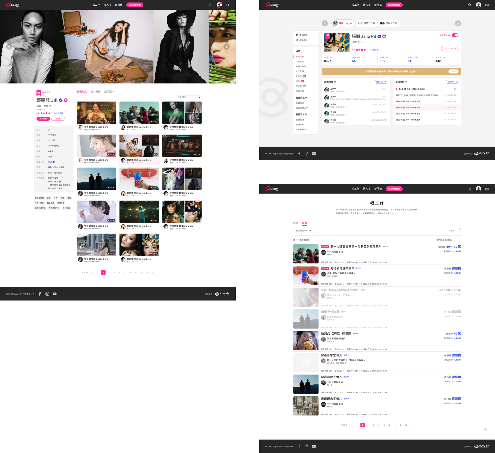
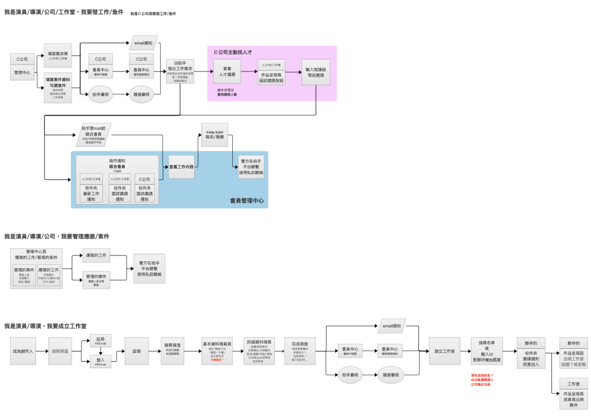
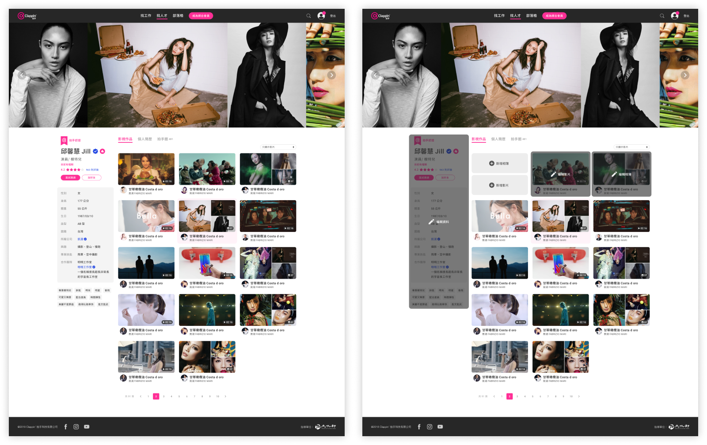
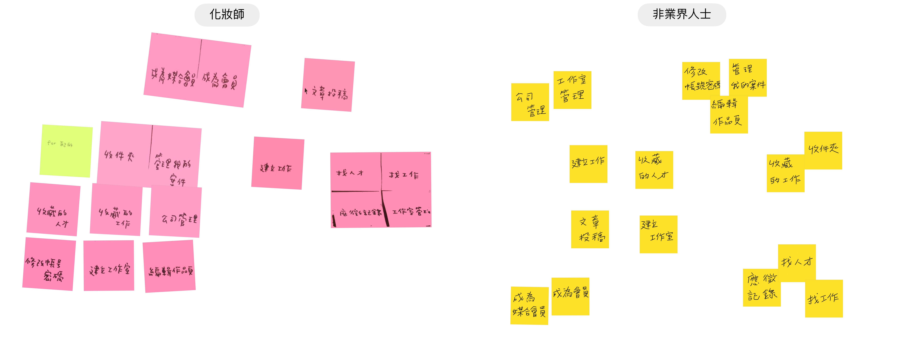
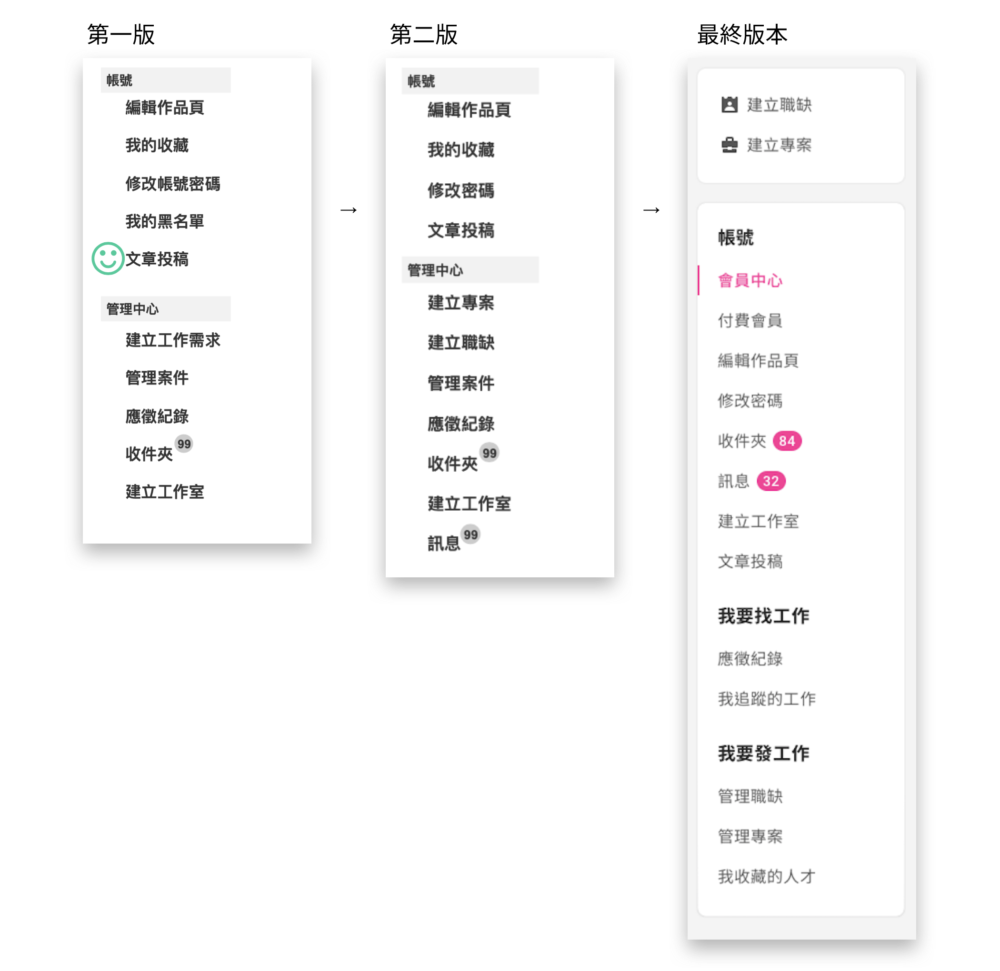
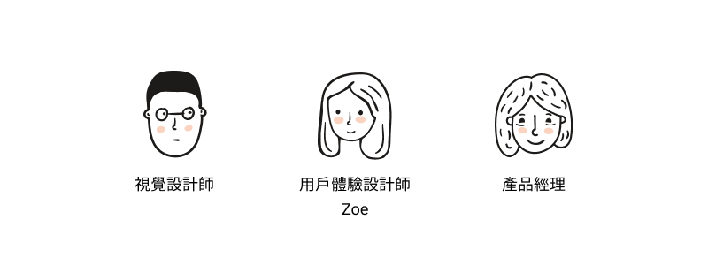
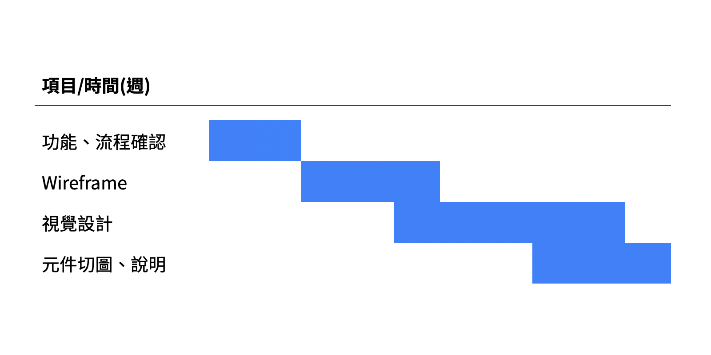

<!DOCTYPE html>
<html lang="zh-TW">
    <head>
        <!-- Required meta tags -->
        <meta charset="utf-8">
        <meta name="viewport" content="width=device-width, initial-scale=1, shrink-to-fit=no">
        <title>Zoe - Clappin</title>
        <!-- <link rel="icon" href="https://img.icons8.com/fluent/48/000000/sprout.png"> -->
    
        <!-- Bootstrap CSS -->
        <link rel="stylesheet" href="https://cdn.jsdelivr.net/npm/bootstrap@4.5.3/dist/css/bootstrap.min.css" integrity="sha384-TX8t27EcRE3e/ihU7zmQxVncDAy5uIKz4rEkgIXeMed4M0jlfIDPvg6uqKI2xXr2" crossorigin="anonymous">
        <link rel="stylesheet" href="css/style.css" type="text/css">
        <link href="https://fonts.googleapis.com/css2?family=DM+Serif+Text&family=Lato:ital@1&display=swap" rel="stylesheet">
      </head>
<body class="wrapper">
    <nav>
        <ul class="d-flex menu-center">
            <li class="mr-auto"><a href="index.html">←  BACK</a></li>
            <li><a href="about.html">About</a></li>
            <li class="ml-4">zoesbac@gmail.com</li>
        </ul>
    </nav>
    <article>
        <section class="first">
            <div class="case-name text-center mb-2"><span class="zhfont">拍手</span> <span lang="en">Clappin</span></div>
            <p class="text-center">2018 · UX Designer · Information Architecture / Web Design · 達成 2,000人註冊 · 專案時間：3 個月 </p>
            <div class="case-photo photo-center">
                
            </div> 
        </section>
        <section class="case-content text-center">
            <h5>關於拍手<span lang="en"> Clappin</span></h5>
            <h1 class="mt-1">為你打造通往影視產業的橋樑</h1>
            <p class="case-s-content case-text pt-4">拍手團隊在影視產業擁有充足的經驗，希望透過一個全新的平台，讓想要跨足影視產業的每一位築夢者能夠展現自我，另一方面也量身打造符合臺灣影視產業的功能，為幕後工作者帶來更多便利，作為兩者的橋樑帶來更多的可能性。</p>
            <div class="photo-center photo-mtb">
                
            </div>
        </section>
        <section class="case-content text-center">
            <h5>01</span></h5>
            <h1 class="mt-1">專案貢獻</h1>
            <div class="case-s-content">
                <h6 class="case-sub text-left pt-4">定義需求：把想法變成產品</h6>
                <p class="case-text text-left ">在產品構想的過程中，與客戶一起理解產業現況、國內外品牌與限制，藉由會議討論、釐清功能帶來的價值，最終收斂為平台初期功能。</p>
                <h6 class="case-sub text-left pt-4">梳理用戶任務</h6>
                <p class="case-text text-left">梳理各個角色任務，將線下產業流程轉換為平台功能，整理出任務列表與客戶討論、優化。</p>
                <h6 class="case-sub text-left pt-4">設計產品架構</h6>
                <p class="case-text text-left">針對產品目標與使用者需求進行規劃，將功能、頁面進行歸納整理，使複雜的架構簡單化，最後與視覺設計師合作完成產品設計。</p>
            </div> 
            <div class="case-photo photo-center photo-mtb">
                
                <p class="comment">初期 sitemap</p>
            </div>
            <div class="case-photo photo-center photo-mtb">
                
                <p class="comment">以角色故事為主描繪任務流程</p>
            </div>
            <div class="case-photo photo-center photo-mtb">
                
                <p class="comment">產品wireframe</p>
            </div>
        </section>
        <section class="case-content text-center">
            <h5>02</h5>
            <h1 class="mt-1">挑戰：更多的產品 <span lang="en">IDEAS</span>？</h1>
            <p class="case-s-content case-text pt-4">影視產業媒合平台是一個全新的嘗試，與客戶溝通過程中，時常會有各式各樣對產品的想法與期待，隨著專案的時程前進，運用腦力激盪法、白板會議與客戶一同釐清當前目標以達成專案。</p>
            <div class="d-flex pt-4">
                <h6 class="text-left col-4">腦力激盪法 <span lang="en">Brainstorming</span></h6>
                <p class="case-text text-left col-8">我們以媒合工作為主軸，發展各種能夠帶來價值的功能及想法，過程中記錄各種功能想法，討論並瞭解可能的限制與優先順序，期間形成對專案的共識。</p>
            </div>          
            <div class="d-flex pt-4">
                <h6 class="text-left col-4">白板會議 <span lang="en">Whiteboarding session</span></h6>
                <p class="case-text text-left col-8">在白板預先寫上歸納好的所有任務流程，將討論中的想法清楚的寫出來或畫出來，確認對功能的認知是相同的（細節也是相同的），討論、修改任務流程直到尋找到共同的解決方法。</p>
            </div>
            <div class="case-photo photo-center photo-mtb">
                
            </div> 
        </section>
        <!-- <p>ex:腦力激盪的四階段用slider表現，image放就好，</p> -->
        <section class="case-content text-center">
            <h5>03</h5>
            <h1 class="mt-1">功能介紹</h1>
            <div class="pt-4">
                <h6 class="case-text">尋找工作：職缺 / 專案</h6>
                <p class="case-text case-s-content">清楚的分類與工作資訊，符合影視產業特性，規劃職缺與專案不同區塊；職缺 / 專案推薦功能，因應產業特殊性，加速媒合的可能。</p>
            </div>          
            <div class="photo-center photo-mtb">
                
            </div> 
            <div class="pt-4">
                <h6 class="case-text">個人作品展示</h6>
                <p class="case-text case-s-content">完整呈現個人資料與經歷、影音作品、平面作品，編輯功能採用與呈現頁面相同格式，編輯時不用重複確定排版，編輯呈現的頁面就是實際呈現的樣式。</p>
            </div> 
            <div class="photo-center photo-mtb">
                
            </div> 
        </section>
        <section class="case-content text-center">
            <h5>04</h5>
            <h1 class="mt-1">我的小嘗試</h1>
            <div class="pt-4 case-s-content">
                <h6 class="text-left">卡片分類法應用 <span lang="en">Card Sorting</span></h6>
                <p class="case-text text-left">因產業特殊性及創新的功能標籤，說明產品時發現內部人員對於標籤的認知不同，進而想瞭解功能標籤是否有更好的命名，於是自己嘗試訪談並運用卡片分類法對兩名影視產業、一名一般民眾進行研究。</p>
            </div>       
            <div class="case-photo photo-center photo-mtb">
                
            </div>
            <div class="d-flex">
                <div class="photo-mtb col-3">
                    <h6 class="case-sub ">研究發現</h6>
                    <p class="text-left">網站上的功能太多，許多標籤無法分類。</p>
                    <p class="text-left">網站功能會因為角色而有很大的差別。</p>
                    <h6 class="case-sub mt-5">最後成果</h6>
                    <p class="text-left">與業主討論過後，以最重要的目標：媒合工作為主，將服務對象縮小到找工作與發工作兩個角色。</p>
                </div>
                <div class="photo-center  col-9">
                    
                </div> 
            </div>

        </section>
        <!-- <section class="case-content text-center">
            <h5>05</h5>
            <h1 class="mt-1">頁面展示</h1>
            <div class="case-photo photo-center photo-mtb">
                
            </div> 
        </section> -->
        <section class="case-content text-center">
            <h5>05</h5>
            <h1 class="mt-1">回顧專案</h1>
            <div class="case-s-content">
                <h6 class="case-sub text-left pt-4">跟時間賽跑：專注於最低限度的產品</h6>
                <p class="case-text text-left ">設計更多功能並提出更多的創意令人感到興奮，如果能以最快的速度發布產品的第一個版本，可以更了解市場、使用者、競爭者、商業模式並進行研究與迭代。</p>
                <h6 class="case-sub text-left pt-4">設計師不只是設計師</h6>
                <p class="case-text text-left">設計師要關注的範圍不只是設計方面，在與客戶、工程師、UI設計師交流的過程中，更多的是如何表達自己的設計與如何溝通，在過程中達成共識、找到合作方式。</p>
            </div> 
            <div class="d-flex photo-center pt-4 photo-mtb">
                <div class="photo-member">
                    <h5>團隊成員</h5>
                    
                </div>
                <div class="photo-projecttime">
                    <h5>專案時程</h5>
                    
                </div>
            </div>
        </section>
    </article>
    <div class="projects-list text-center">
        <h1>更多專案</h1>
        <h5>
            <a href="clappin.html" class="projects-link mr-3" id="clappin">
                <span class="zhfont">拍手</span> 
                <span lang="en">Clappin</span>
            </a>
            <a href="cathaylife.html" class="projects-link mr-3" id="cathay">
                <span class="zhfont">國泰人壽</span> 
                <span lang="en">CRM</span>
            </a>
            <a href="banksinopac.html" class="projects-link" id="bank">
                <span class="zhfont">永豐銀行易用性報告</span>
            </a>
        </h5>
    </div>
    <footer>
        <ul class="d-flex flex-row  menu-center">
            <li><a href="portfilio/Pei-Yu%20Huang_resume.pdf" target="_blank">Resume</a></li>
            <li class="ml-4">zoesbac@gmail.com</li>
        </ul>
    </footer>
    <script src="https://code.jquery.com/jquery-3.5.1.slim.min.js" integrity="sha384-DfXdz2htPH0lsSSs5nCTpuj/zy4C+OGpamoFVy38MVBnE+IbbVYUew+OrCXaRkfj" crossorigin="anonymous"></script>
    <script src="https://cdn.jsdelivr.net/npm/bootstrap@4.5.3/dist/js/bootstrap.bundle.min.js" integrity="sha384-ho+j7jyWK8fNQe+A12Hb8AhRq26LrZ/JpcUGGOn+Y7RsweNrtN/tE3MoK7ZeZDyx" crossorigin="anonymous"></script>
    <script>
        $(document).ready(function(){
            $("a").each(function(){
                if ($(this).prop("href") == window.location.href){
                    $(this).addClass("active-color");
                }
            });
        });
</script>  
  </body>
</html>